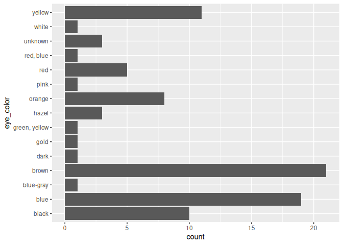
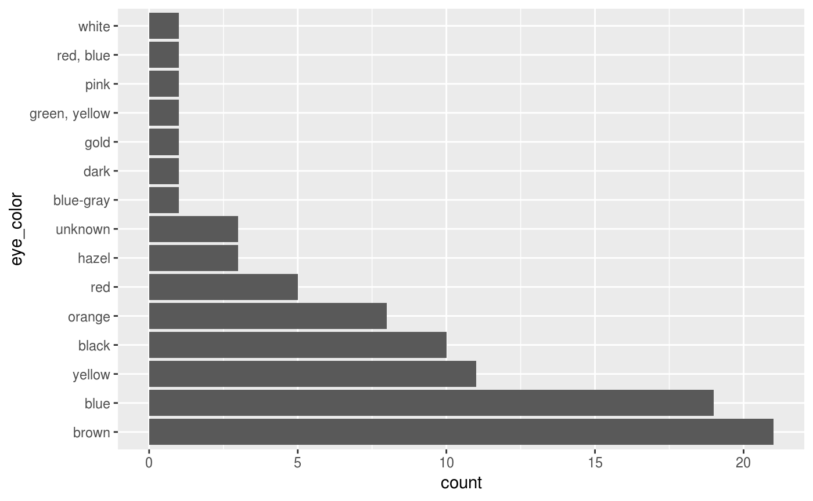

Overview
R uses factors to handle categorical variables, variables that have a fixed and known set of possible values. Factors are also helpful for reordering character vectors to improve display. The goal of the forcats package is to provide a suite of tools that solve common problems with factors, including changing the order of levels or the values. Some examples include:
-
fct_reorder(): Reordering a factor by another variable. -
fct_infreq(): Reordering a factor by the frequency of values. -
fct_relevel(): Changing the order of a factor by hand. -
fct_lump(): Collapsing the least/most frequent values of a factor into “other”.
You can learn more about each of these in vignette("forcats"). If you’re new to factors, the best place to start is the chapter on factors in R for Data Science.

Getting started
forcats is part of the core tidyverse, so you can load it with library(tidyverse) or library(forcats).
starwars %>% filter(!is.na(species)) %>% count(species, sort = TRUE) #> # A tibble: 37 x 2 #> species n #> <chr> <int> #> 1 Human 35 #> 2 Droid 6 #> 3 Gungan 3 #> 4 Kaminoan 2 #> 5 Mirialan 2 #> 6 Twi'lek 2 #> 7 Wookiee 2 #> 8 Zabrak 2 #> 9 Aleena 1 #> 10 Besalisk 1 #> # … with 27 more rows
starwars %>% filter(!is.na(species)) %>% mutate(species = fct_lump(species, n = 3)) %>% count(species) #> # A tibble: 4 x 2 #> species n #> <fct> <int> #> 1 Droid 6 #> 2 Gungan 3 #> 3 Human 35 #> 4 Other 39
ggplot(starwars, aes(x = eye_color)) + geom_bar() + coord_flip()

starwars %>% mutate(eye_color = fct_infreq(eye_color)) %>% ggplot(aes(x = eye_color)) + geom_bar() + coord_flip()

More resources
For a history of factors, I recommend stringsAsFactors: An unauthorized biography by Roger Peng and stringsAsFactors = <sigh> by Thomas Lumley. If you want to learn more about other approaches to working with factors and categorical data, I recommend Wrangling categorical data in R, by Amelia McNamara and Nicholas Horton.
Getting help
If you encounter a clear bug, please file a minimal reproducible example on github. For questions and other discussion, please use community.rstudio.com.
Code of Conduct
Please note that the ‘forcats’ project is released with a Contributor Code of Conduct. By contributing to this project, you agree to abide by its terms.